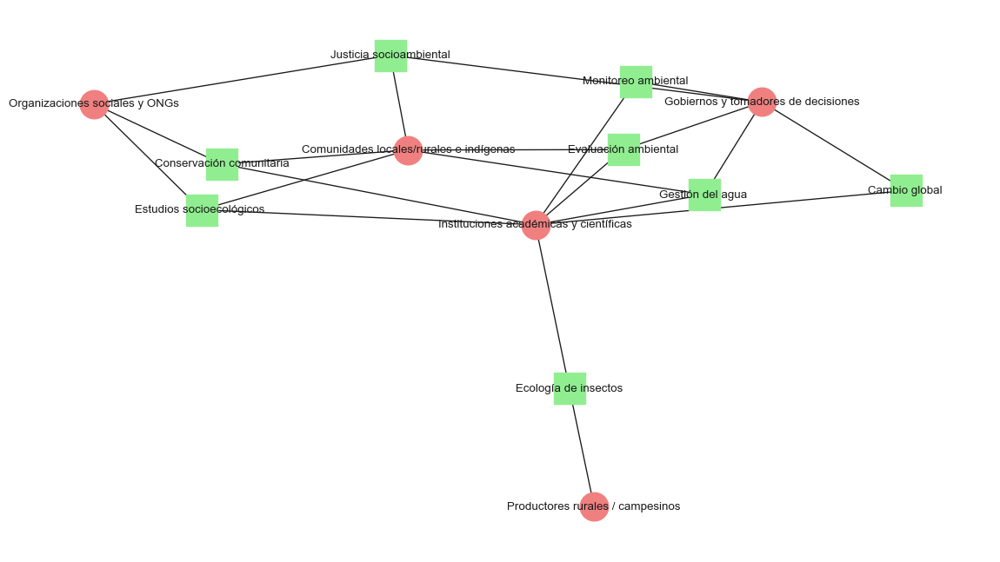

Líneas de investigación RAYS
Semejanza entre los temas
Análisis de temas y actores
Temas originales

Dendrograma
C:\Users\equih\AppData\Local\Temp\ipykernel_9432\3842526135.py:15: UserWarning: Tight layout not applied. The bottom and top margins cannot be made large enough to accommodate all Axes decorations.
plt.tight_layout()
Vincular con actores

Actores transversales

Cluster temáticos

Cluster 1: Sistemas naturales y cambio global
Temas incluidos:
Cambio global, sostenibilidad y dinámica del paisaje
Gestión del agua y procesos hidrológicos
Sistemática y ecología de insectos
Descripción: Este grupo reúne temas relacionados con los procesos ecológicos a gran escala, la dinámica de los sistemas terrestres y el papel de la biodiversidad (en especial los insectos) en la regulación ambiental. La gestión del agua aparece como eje transversal que conecta el cambio climático con necesidades concretas de adaptación ecológica. Tiene fuerte anclaje en la ciencia básica, la modelación y el monitoreo.
Cluster 2: Restauración, conservación y justicia territorial
Temas incluidos:
Conservación y manejo comunitario de la biodiversidad
Evaluación ambiental, restauración y manejo de ecosistemas
Políticas y justicia socioambiental
Descripción: Aquí se agrupan temas con una fuerte dimensión territorial y sociopolítica, que abordan la restauración ecológica, la conservación participativa y la exigencia de derechos en contextos de conflictividad ambiental. Enfatiza la relación entre las comunidades (especialmente rurales e indígenas), las instituciones y el acceso equitativo a los bienes comunes. Se nutre de enfoques ecológicos aplicados, gobernanza y políticas públicas.
Cluster 3: Herramientas sociales y tecnológicas para la sustentabilidad
Temas incluidos:
Estudios sociocognitivos y herramientas socioecológicas para la sustentabilidad
Tecnología para el monitoreo ambiental
Descripción: Este grupo destaca por su enfoque instrumental y metodológico: por un lado, el análisis de cómo se construyen y usan los saberes en procesos participativos; por otro, el uso de tecnologías de monitoreo para la gestión y evaluación ambiental. Es un cluster que vincula lo social y lo técnico, ideal para proyectos de innovación comunitaria, ciencia ciudadana y gobernanza colaborativa.
Temas reformulados
- Agroecología y sistemas alimentarios sustentables
Síntesis: Fomento de transiciones agroecológicas con enfoque en sistemas agroforestales, conservación genética y seguridad alimentaria rural.
Puntos de acción:
- Impulsar prácticas agroecológicas adaptadas al contexto local.
- Fortalecer bancos de germoplasma comunitarios.
- Capacitar en innovación de sistemas tradicionales de producción.
- Cambio global, sostenibilidad y dinámica del paisaje
Síntesis: Análisis del impacto del cambio climático y actividades humanas sobre el paisaje, con énfasis en sostenibilidad y cobertura vegetal.
Puntos de acción:
- Implementar monitoreo de cambios en uso de suelo y cobertura vegetal.
- Desarrollar planes de ordenamiento territorial sostenibles.
- Promover estrategias de adaptación al cambio climático.
- Conservación y manejo comunitario de la biodiversidad
Síntesis: Conservación ambiental basada en comunidades, enfocada en el uso sustentable de recursos forestales y relaciones socioecológicas.
Puntos de acción:
- Fortalecer capacidades locales para el manejo forestal sustentable.
- Promover gobernanza comunitaria de la biodiversidad.
- Documentar y valorar saberes locales en conservación.
- Evaluación ambiental, restauración y manejo de ecosistemas
Síntesis: Evaluación integral y restauración de ecosistemas terrestres y costeros para la toma de decisiones sustentables.
Puntos de acción:
- Establecer indicadores integrales de salud ecosistémica.
- Diseñar proyectos de restauración ecológica con base científica.
- Integrar criterios ecológicos en políticas de uso de suelo.
- Estudios sociocognitivos y herramientas socioecológicas
Síntesis: Desarrollo de metodologías participativas para entender el cambio ambiental y fomentar conciencia socioambiental.
Puntos de acción:
- Aplicar herramientas lúdicas y multiactorales en procesos educativos.
- Investigar percepciones locales sobre cambio ambiental.
- Integrar ciencias cognitivas en proyectos de sustentabilidad.
- Gestión del agua y procesos hidrológicos
Síntesis: Gestión local e integral del agua con enfoque en seguridad hídrica y análisis de sistemas socioecológicos.
Puntos de acción:
- Crear comités locales para la gestión del agua.
- Promover tecnologías de captación y uso eficiente.
- Monitorear flujos hidrológicos con participación comunitaria.
- Políticas y justicia socioambiental
Síntesis: Análisis de políticas ambientales y su impacto en justicia social y bienestar humano.
Puntos de acción:
- Evaluar políticas públicas desde una perspectiva de equidad.
- Incidir en el diseño de marcos legales con enfoque de justicia ambiental.
- Promover participación ciudadana en la formulación de políticas.
- Sistemática y ecología de insectos
Síntesis: Investigación sobre insectos de interés médico y veterinario desde un enfoque ecológico y taxonómico.
Puntos de acción:
- Fortalecer colecciones biológicas y su digitalización.
- Estudiar relaciones ecológicas entre insectos y ambientes perturbados.
- Capacitar en identificación y monitoreo de vectores.
- Tecnología para el monitoreo ambiental
Síntesis: Aplicación de tecnologías avanzadas (IA, percepción remota, sensores) para el monitoreo ambiental y del comportamiento animal.
Puntos de acción:
- Desarrollar plataformas abiertas para monitoreo ambiental.
- Integrar IA en el análisis de datos ecológicos.
- Fomentar alianzas interdisciplinarias para innovación tecnológica.
Actores fecuentes y relevantes
| Actor | Participación / Temas Relacionados |
|---|---|
| Comunidades rurales y locales | Agroecología, conservación comunitaria, gestión del agua, restauración ecológica, justicia socioambiental. |
| Organizaciones comunitarias | Conservación de biodiversidad, manejo forestal, participación en políticas, gobernanza del agua. |
| Instituciones académicas y centros de investigación | Todos los temas (desarrollo de metodologías, sistemática de insectos, tecnologías de monitoreo, estudios socioecológicos). |
| Tomadores de decisiones / Gobiernos locales y nacionales | Políticas ambientales, ordenamiento territorial, justicia socioambiental, restauración, manejo del paisaje. |
| ONGs ambientales y de desarrollo rural | Apoyo en conservación, gestión de recursos, fortalecimiento comunitario, monitoreo ambiental. |
| Productores agropecuarios | Agroecología, innovación productiva, seguridad alimentaria, uso sustentable del suelo y del agua. |
| Instituciones de educación y formación | Educación socioambiental, herramientas participativas, cambio cognitivo hacia la sustentabilidad. |
| Juventudes y población escolar | Educación ambiental, herramientas lúdicas, concientización sobre cambio climático y biodiversidad. |
| Pueblos indígenas | Conservación basada en saberes tradicionales, manejo del territorio, gobernanza del agua y biodiversidad. |
| Usuarios del agua (agrícolas, domésticos, industriales) | Gestión y justicia hídrica, seguridad del recurso, participación en cuencas. |
| Entidades tecnológicas / desarrolladores | Aplicación de IA, sensores, percepción remota, monitoreo ambiental. |
Actores Transversales Clave (Altamente Recurrentes)
- Comunidades locales/rurales e indígenas
- Gobiernos y tomadores de decisiones
- Instituciones académicas y científicas
- Organizaciones sociales y ONGs
- Productores rurales / campesinos
Matriz de actores interés
| Categoría | Actores | Interés | Influencia | Estrategia recomendada |
|---|---|---|---|---|
| Alta Influencia / Alto Interés (Gestión cercana) | - Gobiernos locales y nacionales - Instituciones académicas - ONGs ambientales relevantes |
Alto | Alto | Involucrarlos activamente en diseño, implementación y evaluación de iniciativas. |
| Alta Influencia / Bajo Interés (Monitoreo estratégico) | - Instituciones tecnológicas - Agencias gubernamentales no ambientales - Empresas del sector hídrico o agropecuario |
Bajo | Alto | Informar, sensibilizar y alinear intereses con metas socioambientales. |
| Baja Influencia / Alto Interés (Apoyo y empoderamiento) | - Comunidades rurales e indígenas - Productores agroecológicos - Grupos juveniles y escolares |
Alto | Bajo | Empoderar mediante capacitación, recursos, gobernanza participativa. |
| Baja Influencia / Bajo Interés (Seguimiento mínimo) | - Población urbana no organizada - Actores externos no involucrados (p. ej. turistas, sector inmobiliario informal) |
Bajo | Bajo | Informar ocasionalmente y vigilar posibles impactos indirectos. |
Comunidades rurales e indígenas: Aunque su influencia institucional es baja, su interés es alto y su papel en la ejecución de proyectos es fundamental → clave empoderarlas.
Gobiernos y universidades: Actores con capacidad técnica y decisional; son indispensables para escala y sostenibilidad.
ONGs: Pueden mediar entre comunidades y Estado, facilitar procesos participativos y fortalecer capacidades locales.

Qué tal un DAG de todo esto
C:\Users\equih\AppData\Local\Temp\ipykernel_9432\892479934.py:72: UserWarning: This figure includes Axes that are not compatible with tight_layout, so results might be incorrect.
plt.tight_layout()
Agregando relaciones indirectas
Dejé a los actores externos (como turismo, sector inmobiliario) desconectados intencionalmente porque, en el contexto de tu matriz de interés–influencia:
- Tienen bajo interés y baja influencia directa positiva.
- Su participación no suele ser proactiva en agendas de sostenibilidad.
- Su impacto es más indirecto (por ejemplo, presión sobre el suelo, recursos hídricos o biodiversidad).
- Sin embargo, esto no significa que deban ignorarse. En una versión más estratégica del DAG, podemos:
- Agregar conexiones de vigilancia o conflicto potencial, especialmente desde:
- Comunidades locales → Actores externos (por impacto territorial).
- Gobiernos / ONGs → Actores externos (regulación o mitigación de impactos).

Temas y actores